먼저 생각해 보세요.
Wenn ich sechzehn wäre, würde ich allein zum Konzert gehen. 말하는 사람은 지금 열여섯 살인가요?
wäre와 würde는 사실이 아닌 일을 가정할 때 써요.
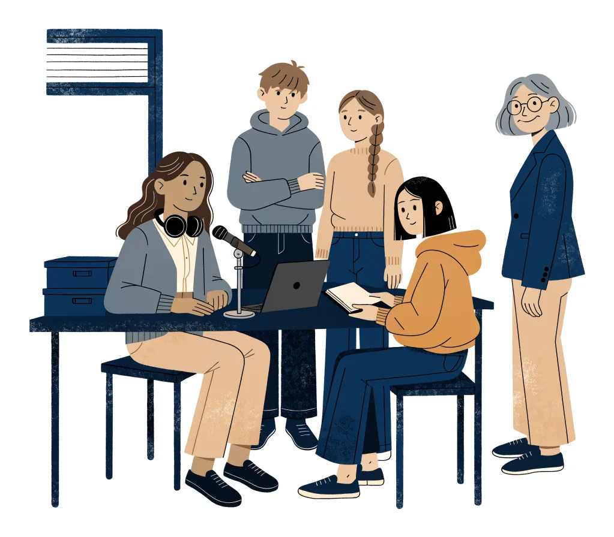
9월 첫 주, 새 학년이 시작됐어요. Yuna는 한국에서 여름 방학을 보내고 쾰른으로 돌아왔고, 반은 이제 9b예요. Frau Schneider와 함께 반 팟캐스트 「Mitreden」을 시작해요. 첫 주제는 가족이에요.
눌러서 들어 보세요.
먼저 생각해 보세요.
Wenn ich sechzehn wäre, würde ich allein zum Konzert gehen. 말하는 사람은 지금 열여섯 살인가요?
wäre와 würde는 사실이 아닌 일을 가정할 때 써요.
문법 Konjunktiv II (Wenn ich … wäre, würde ich …), obwohl, trotzdem
이 과를 마치면 가족의 모습을 설명하고, 세대 사이의 생각 차이를 말하고, '만약 ~라면'이라고 가정해서 말할 수 있어요.
9월 첫 주, 9b 교실이에요. Frau Schneider가 팟캐스트 계획을 알리고 첫 주제를 정해요.
들으면서 찾아보세요. 팟캐스트의 첫 주제는 무엇인가요?
금요일 저녁, Wagner 집 식탁이에요. Emma가 다음 주 수요일에 열리는 콘서트 이야기를 꺼내요.
들으면서 찾아보세요. Emma는 결국 콘서트에 가나요?
두 대화를 듣고 답하세요.
Wie heißt der Podcast der 9b?
Bei Elif wohnen drei Generationen zusammen.
Was sagt Lukas über seine Schwester Lea?
Emma hat zwei Schwestern.
Emma sagt: „Ich bin ein Einzelkind.“
Warum sagt Sabine zuerst Nein?
Thomas는 열다섯 살 때 어땠나요?
가족은 어떤 타협안을 찾았나요?
낱말 33개예요. 낱말이나 예문 앞의 단추를 누르면 소리가 나요. 명사는 der, die, das를 색으로 구분했어요.
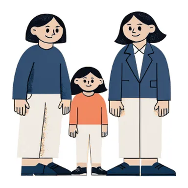
die Generation, die Generationen 세대
Bei uns wohnen drei Generationen zusammen.우리 집에는 세 세대가 같이 살아요.
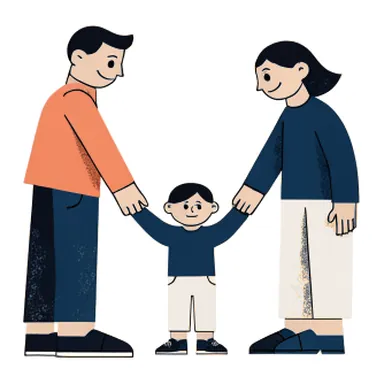
das Einzelkind, die Einzelkinder 외동
Emma ist ein Einzelkind.Emma는 외동이에요.
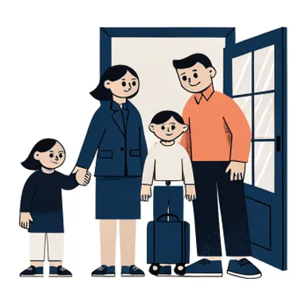
die Gastfamilie, die Gastfamilien 호스트 가족
Meine Gastfamilie ist sehr nett.우리 호스트 가족은 아주 친절해요.
die Patchworkfamilie, die Patchworkfamilien 재혼 가족
Paul lebt in einer Patchworkfamilie.Paul은 재혼 가족으로 살아요.
der Elternteil, die Elternteile 부모 가운데 한 사람
Viele Kinder leben mit nur einem Elternteil.부모 가운데 한 사람하고만 사는 아이들도 많아요.
sich trennen, hat sich getrennt 헤어지다, 갈라서다
Seine Eltern haben sich getrennt.그의 부모님은 헤어지셨어요.
der Stiefvater, die Stiefväter 새아버지
Mein Stiefvater heißt Stefan.우리 새아버지 이름은 Stefan이에요.
die Tochter, die Töchter 딸
Stefan hat eine Tochter.Stefan에게는 딸이 한 명 있어요.
verheiratet 결혼한
Meine Eltern sind seit zwanzig Jahren verheiratet.우리 부모님은 결혼한 지 20년 됐어요.
erwachsen 어른이 된, 다 자란
Mit achtzehn ist man erwachsen.열여덟 살이면 어른이에요.
leben, hat gelebt 살다, 지내다
Mein Vater lebt in Wien.우리 아버지는 빈에 사세요.
anders 다른, 다르게
Jede Familie ist anders.가족마다 달라요.
sich verstehen, hat sich verstanden 사이가 좋다, 잘 지내다
Ich verstehe mich gut mit meinem Bruder.나는 남동생과 사이가 좋아요.
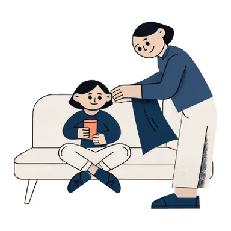
sich kümmern, hat sich gekümmert 돌보다, 챙기다
Meine Oma kümmert sich um uns.할머니가 우리를 돌봐 주세요.
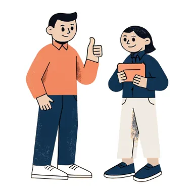
erlauben, hat erlaubt 허락하다
Meine Eltern erlauben das nicht.부모님은 그걸 허락하지 않으세요.
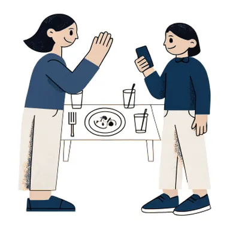
verbieten, hat verboten 금지하다
Mein Vater verbietet das Handy am Tisch.아버지는 식탁에서 휴대폰을 못 쓰게 하세요.
vertrauen, hat vertraut 믿다
Meine Eltern vertrauen mir.부모님은 나를 믿으세요.
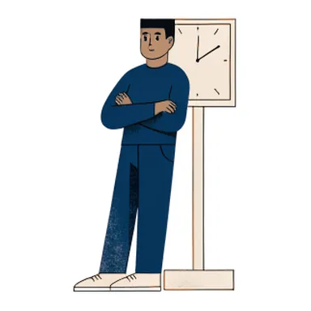
streng 엄한
Früher waren Eltern strenger.예전에는 부모님들이 더 엄했어요.
locker 너그러운, 느긋한
Meine Mutter ist sehr locker.우리 어머니는 아주 너그러우세요.
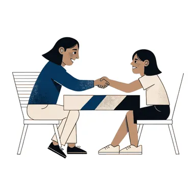
der Kompromiss, die Kompromisse 타협
Wir finden einen Kompromiss.우리는 타협안을 찾아요.
die Ruhe 조용함, 쉼
Ich brauche meine Ruhe.나는 조용히 있고 싶어요.
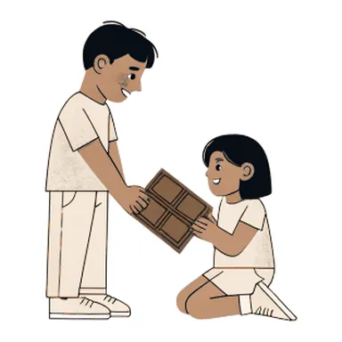
teilen, hat geteilt 나누다, 함께 쓰다
Ich teile das Zimmer mit meiner Schwester.나는 여동생과 방을 같이 써요.
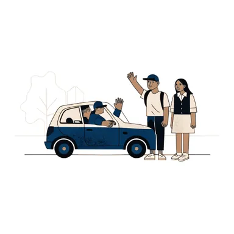
abholen, hat abgeholt 데리러 가다
Mein Vater holt uns um halb elf ab.아버지가 열 시 반에 우리를 데리러 오세요.
unfair 불공평한
Das ist unfair!그건 불공평해요!
der Podcast, die Podcasts 팟캐스트
Unser Podcast heißt „Mitreden“.우리 팟캐스트 이름은 「Mitreden」이에요.
die Folge, die Folgen (방송의) 회
Die erste Folge kommt bald.첫 회가 곧 나와요.
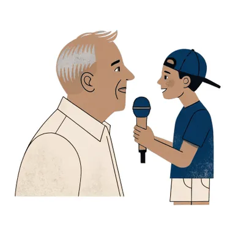
das Interview, die Interviews 인터뷰
Wir machen ein Interview mit Oma.우리는 할머니를 인터뷰해요.
moderieren, hat moderiert 진행하다
Elif moderiert die erste Folge.Elif가 첫 회를 진행해요.
mitreden, hat mitgeredet 함께 이야기하다, 의견을 보태다
Bei diesem Thema können alle mitreden.이 주제는 누구나 함께 이야기할 수 있어요.
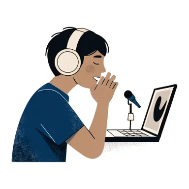
aufnehmen (du nimmst auf, er nimmt auf) 녹음하다
Wir nehmen das Gespräch auf.우리는 그 대화를 녹음해요.
die Meinung, die Meinungen 의견
Was ist deine Meinung?네 의견은 뭐야?
sich wünschen, hat sich gewünscht 바라다
Ich wünsche mir einen Bruder.나는 남동생이 있으면 좋겠어요.
obwohl ~지만, ~인데도
Obwohl es regnet, gehe ich spazieren.비가 오지만 나는 산책하러 가요.
이 과의 낱말로 여덟 문제를 풀어요.
예문을 보고 답해 보세요.
Wenn ich ein Einzelkind wäre … 말하는 사람은 외동인가요?
규칙
사실이 아닌 일이나 일어나기 어려운 일을 가정할 때는 Konjunktiv II를 써요. sein은 wäre, haben은 hätte로 쓰고, 다른 동사는 würde와 동사 원형으로 써요. wenn 문장에서는 동사가 맨 끝에 오고, 뒤 문장은 동사로 시작해요.
| 사실 | 가정 |
|---|---|
| Ich bin kein Einzelkind. | Wenn ich ein Einzelkind wäre, … |
| Ich habe keine Schwester. | Wenn ich eine Schwester hätte, … |
| Ich wohne nicht in Seoul. | Wenn ich in Seoul wohnen würde, … |
주의 앞 문장과 뒤 문장 모두 Konjunktiv II로 써요. Wenn ich Zeit hätte, würde ich dich besuchen. 정말 일어날 수 있는 일은 A2에서 배운 대로 써요. Wenn ich Zeit habe, besuche ich dich.
예문을 보고 답해 보세요.
konnte와 könnte 가운데 가정을 나타내는 것은 무엇인가요?
규칙
조동사는 würde 없이 한 낱말로 써요. 과거형 konnte, musste, durfte에 두 점을 찍으면 Konjunktiv II가 돼요. sollte와 wollte는 두 점 없이 그대로 써요.
| 과거 (정말 있던 일) | Konjunktiv II (가정) |
|---|---|
| ich konnte | ich könnte |
| ich musste | ich müsste |
| ich durfte | ich dürfte |
| ich hatte | ich hätte |
| ich war | ich wäre |
주의 du에는 -st, wir와 sie에는 -n, ihr에는 -t를 붙여요. du könntest, wir könnten, ihr könntet.
예문을 보고 답해 보세요.
obwohl 문장에서 동사는 어디에 오나요?
규칙
obwohl과 trotzdem은 둘 다 '그런데도'라는 뜻이에요. obwohl은 weil처럼 동사를 맨 끝으로 보내요. trotzdem은 deshalb처럼 새 문장의 첫 자리에 오고 바로 뒤에 동사가 와요.
| obwohl + 동사 맨 끝 | trotzdem + 동사 |
|---|---|
| Obwohl es spät ist, gehe ich hin. | Es ist spät. Trotzdem gehe ich hin. |
| Obwohl wir oft streiten, verstehen wir uns gut. | Wir streiten oft. Trotzdem verstehen wir uns gut. |
주의 obwohl 뒤에는 방해가 되는 사정이 오고, trotzdem 뒤에는 그래도 하는 일이 와요.
Lukas가 팟캐스트에 쓰려고 북해에 사시는 할머니와 통화해요. 듣고 답하세요.
Interview mit Oma
Lukas Oma, wie war deine Familie früher?
Oma Wir waren sechs Kinder. Ich habe das Zimmer mit zwei Schwestern geteilt.
Oma Meine Eltern waren streng. Um acht mussten wir zu Hause sein.
Lukas Und was würdest du heute anders machen?
Oma Wenn ich noch einmal jung wäre, würde ich mehr reisen. Aber ich bin zufrieden.
Oma Obwohl wir weit weg wohnen, sehe ich euch oft am Bildschirm. Das ist schön.
Wie viele Kinder waren in Omas Familie?
Oma hatte ein Zimmer für sich allein.
Ich habe das Zimmer mit zwei Schwestern geteilt.
Was würde Oma tun, wenn sie noch einmal jung wäre?
Lukas와 할머니는 어떻게 자주 만나나요?
듣고 알맞은 것을 고르세요.
Emma에게는 남자 형제가 있나요?
Wenn ich einen Bruder hätte, würde ich mit ihm Fußball spielen.
Yuna는 쾰른에서 지내는 것이 어떤가요?
Obwohl ich meine Familie vermisse, bin ich gern in Köln.
Lukas는 몇 시까지 집에 가야 하나요?
Meine Eltern sind nicht streng. Trotzdem muss ich um neun zu Hause sein.
학교가 끝나고 집에 가면 Elif를 맞아 주는 사람은 누구인가요?
Wenn meine Oma nicht bei uns wohnen würde, wäre ich nach der Schule allein.
Paul이 팟캐스트 게시판에 가족 이야기를 썼어요. 읽고 답하세요.
Meine Patchworkfamilie
Meine Eltern haben sich vor drei Jahren getrennt. Zuerst war ich sehr traurig.
Jetzt wohne ich mit meiner Mutter und ihrem Mann Stefan in Köln. Stefan ist mein Stiefvater. Er hat eine Tochter, Marie. Sie ist sieben.
Mein Vater lebt in Wien. In den Ferien besuche ich ihn. Dann fahren wir zusammen in die Berge.
Obwohl wir jetzt eine Patchworkfamilie sind, verstehen wir uns gut. Marie ist manchmal anstrengend. Trotzdem mag ich sie.
Wenn Wien nicht so weit weg wäre, würde ich meinen Vater jedes Wochenende besuchen.
Wann haben sich Pauls Eltern getrennt?
Wer ist Stefan?
Pauls Vater lebt in Köln.
Mein Vater lebt in Wien.
Was macht Paul mit seinem Vater in den Ferien?
Paul은 Marie를 어떻게 생각하나요?
9b가 팟캐스트에 쓰려고 반 학생 24명에게 물었어요. 결과표를 보고 답하세요.
Umfrage in der 9b: Mit wem wohnst du?
| Antwort | Zahl |
|---|---|
| mit Mutter und Vater | 13 |
| mit einem Elternteil | 5 |
| in einer Patchworkfamilie | 3 |
| mit Eltern und Großeltern | 2 |
| in einer Gastfamilie | 1 |
Wie viele wohnen mit Mutter und Vater?
In der 9b wohnen mehr Schüler in einer Patchworkfamilie als mit einem Elternteil.
한 부모와 사는 학생은 5명, 재혼 가족으로 사는 학생은 3명이에요.
Wer aus der 9b wohnt in einer Gastfamilie?
사실이 아닌 일을 가정해요. 알맞은 말을 고르세요.
Wenn ich ein Einzelkind , hätte ich meine Ruhe.
Wenn ich eine Schwester , würde ich alles mit ihr teilen.
Wenn ich sechzehn wäre, ich allein zum Konzert gehen.
Wenn wir in Seoul wohnen , würde ich Jun jeden Tag sehen.
Wenn Oma in Köln wohnen würde, wir sie öfter besuchen.
Wenn du mehr Zeit , würdest du dann mitkommen?
obwohl과 trotzdem 가운데 알맞은 말을 고르세요. 동사가 어디에 있는지 보세요.
es schon spät ist, will Emma zum Konzert gehen.
동사 ist가 맨 끝에 있어요.
Es ist schon spät. will Emma zum Konzert gehen.
바로 뒤에 동사 will이 와요.
Wir streiten oft. verstehen wir uns gut.
meine Großeltern weit weg wohnen, sehen wir uns oft.
Meine Eltern sind streng. vertrauen sie mir.
Paul mag Marie, sie manchmal anstrengend ist.
정말 있던 일인가요, 가정인가요? 한국어 뜻을 보고 고르세요.
Gestern ich nicht kommen.
어제 나는 올 수 없었어요.
Wenn ich Zeit hätte, ich dir helfen.
시간이 있다면 너를 도와줄 수 있을 텐데.
Als Kind ich um acht ins Bett gehen.
어렸을 때 나는 여덟 시에 자야 했어요.
Wenn ich sechzehn wäre, ich länger bleiben.
열여섯 살이라면 더 오래 있어도 될 텐데.
Früher Thomas nur bis neun draußen bleiben.
예전에 Thomas는 아홉 시까지만 밖에 있어도 됐어요.
Wenn wir ein Auto hätten, wir nicht mit dem Bus fahren.
차가 있다면 버스를 타지 않아도 될 텐데.
낱말을 순서대로 눌러 문장을 만드세요.
내가 나이가 더 많다면 혼자 여행할 텐데.
우리는 자주 다투지만 사이가 좋아.
부모님은 나를 믿으셔.
우리는 타협안을 찾아.
낱말과 뜻을 짝지으세요.
듣고 그대로 써 보세요.
Ich bin ein Einzelkind. 나는 외동이야.
Wir finden einen Kompromiss. 타협안을 찾자.
Meine Eltern vertrauen mir. 부모님은 나를 믿으셔.
Ich wohne mit … zusammen. 나는 ~와 같이 살아.
Ich bin ein Einzelkind. 나는 외동이야.
Meine Eltern leben getrennt. 우리 부모님은 따로 사셔.
Bei uns wohnen drei Generationen. 우리 집에는 세 세대가 살아.
Ich verstehe mich gut mit … 나는 ~와 사이가 좋아.
Wir streiten oft, aber … 우리는 자주 다투지만 …
Meine Oma kümmert sich um uns. 할머니가 우리를 돌봐 주셔.
Wenn ich … wäre, würde ich … 내가 ~라면 ~할 텐데.
Wenn ich … hätte, könnte ich … 나에게 ~이 있다면 ~할 수 있을 텐데.
An deiner Stelle würde ich … 내가 너라면 ~할 거야.
Ich habe einen Vorschlag. 제안이 있어.
Wir finden einen Kompromiss. 타협안을 찾자.
Einverstanden! 좋아!
Das ist unfair! 그건 불공평해!
대화 B에서 역할을 하나 고르세요. 상대의 말은 음성으로 나오고, 내 차례에는 직접 말해요.
내 가족을 떠올리며 적으세요. 완성된 문장을 소리 내어 읽어 보세요.
Ich wohne mit meinen Eltern und meinem Bruder zusammen.
Ich verstehe mich gut mit meiner Mutter.
Wenn ich eine große Schwester hätte, würde ich mit ihr ins Kino gehen.
Obwohl wir manchmal streiten, mag ich meine Familie.
Familie heute
팟캐스트 「Mitreden」의 게시판에 내 가족을 소개하는 글을 써 보세요. 일곱 문장쯤 써요.
Ich wohne mit meinen Eltern und meinem Bruder in Seoul. Mein Bruder ist elf und ich verstehe mich gut mit ihm. Obwohl wir manchmal streiten, spielen wir oft zusammen. Meine Eltern sind sehr streng: Um zehn muss ich das Handy ausmachen. Trotzdem vertrauen sie mir. Meine Großeltern wohnen in Busan und wir besuchen sie in den Ferien. Wenn sie in Seoul wohnen würden, könnte ich sie jede Woche sehen.
다 쓴 뒤에 확인해 보세요.
Ich kann meine Familie und andere Familien beschreiben.내 가족과 여러 가족의 모습을 설명할 수 있어요.
Ich kann über Regeln zu Hause und über die Generationen sprechen.집의 규칙과 세대 차이를 이야기할 수 있어요.
Ich kann sagen, was ich tun würde, wenn etwas anders wäre.사정이 다르다면 무엇을 할지 가정해서 말할 수 있어요.